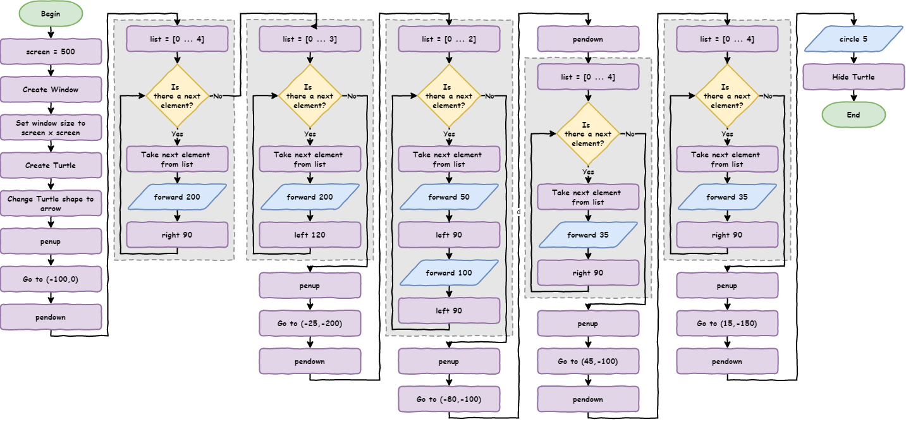
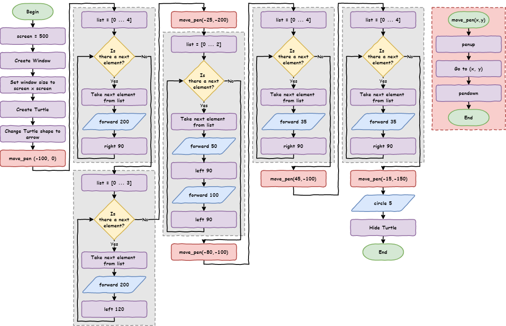
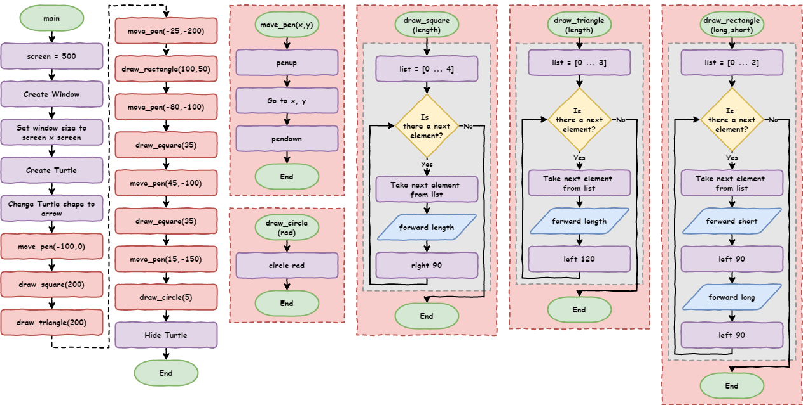
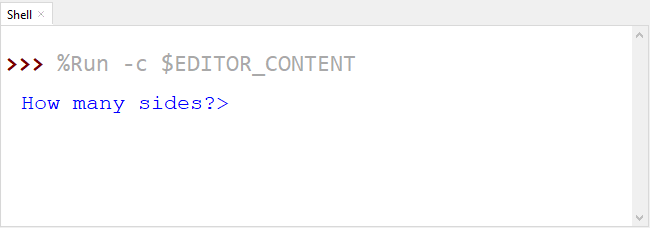
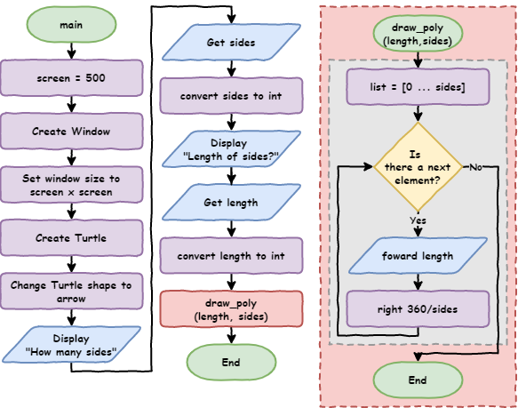

Python Turtle - Lesson 4¶
Part 1: Functions¶
What are functions?¶
Functions are blocks of code that you can use again and again in your program.
So far, your code has only run once from top to bottom. Even when you use a loop, the loop itself only runs once — it just repeats the code inside it before moving on.
A function works differently.
With a function:
you take a group of code and move it somewhere else
you give that group of code a name
you can then use (or call) that code whenever you need it
This means you don’t have to write the same code over and over again.
When your program calls a function, it jumps to that block of code, runs it, and then comes back to continue the program.
To see how this works, we will start with a solution for lesson_3_ex_4.py.
Here is the flowchart for the solution:

Here is the code. You can either type it into a new file, or download the lesson_4_pt_1.py file.
1import turtle
2
3# set up screen
4screen = 500
5window = turtle.Screen()
6window.setup(screen, screen)
7
8# create turtle instance
9my_ttl = turtle.Turtle()
10my_ttl.shape("arrow")
11
12##################################
13## Using the turtle command you ##
14## have learnt, draw a house. ##
15##################################
16
17# move pen
18my_ttl.penup()
19my_ttl.goto(-100, 0)
20my_ttl.pendown()
21
22# draw square
23for index in range(4):
24 my_ttl.forward(200)
25 my_ttl.right(90)
26
27# draw triangle
28for index in range(3):
29 my_ttl.forward(200)
30 my_ttl.left(120)
31
32# move pen
33my_ttl.penup()
34my_ttl.goto(-25, -200)
35my_ttl.pendown()
36
37# draw rectangle
38for index in range(2):
39 my_ttl.forward(50)
40 my_ttl.left(90)
41 my_ttl.forward(100)
42 my_ttl.left(90)
43
44# move pen
45my_ttl.penup()
46my_ttl.goto(-80, -100)
47my_ttl.pendown()
48
49# draw square
50for index in range(4):
51 my_ttl.forward(35)
52 my_ttl.right(90)
53
54# move pen
55my_ttl.penup()
56my_ttl.goto(45, -100)
57my_ttl.pendown()
58
59# draw square
60for index in range(4):
61 my_ttl.forward(35)
62 my_ttl.right(90)
63
64# move pen
65my_ttl.penup()
66my_ttl.goto(15, -150)
67my_ttl.pendown()
68
69# draw circle
70my_ttl.circle(5)
71my_ttl.hideturtle()
Predict
Predict what kind of house the code will draw
Run
Run the code and check if it matches what you predicted
Remember the DRY principle (Don’t Repeat Yourself). Look at the code and think about this:
Does the code repeat the same instructions?
Are there parts that look very similar?
Hint: Read the comments carefully — they can help you spot the repeated parts.
1import turtle
2
3# set up screen
4screen = 500
5window = turtle.Screen()
6window.setup(screen, screen)
7
8# create turtle instance
9my_ttl = turtle.Turtle()
10my_ttl.shape("arrow")
11
12##################################
13## Using the turtle command you ##
14## have learnt, draw a house. ##
15##################################
16
17# move pen
18my_ttl.penup()
19my_ttl.goto(-100, 0)
20my_ttl.pendown()
21
22# draw square
23for index in range(4):
24 my_ttl.forward(200)
25 my_ttl.right(90)
26
27# draw triangle
28for index in range(3):
29 my_ttl.forward(200)
30 my_ttl.left(120)
31
32# move pen
33my_ttl.penup()
34my_ttl.goto(-25, -200)
35my_ttl.pendown()
36
37# draw rectangle
38for index in range(2):
39 my_ttl.forward(50)
40 my_ttl.left(90)
41 my_ttl.forward(100)
42 my_ttl.left(90)
43
44# move pen
45my_ttl.penup()
46my_ttl.goto(-80, -100)
47my_ttl.pendown()
48
49# draw square
50for index in range(4):
51 my_ttl.forward(35)
52 my_ttl.right(90)
53
54# move pen
55my_ttl.penup()
56my_ttl.goto(45, -100)
57my_ttl.pendown()
58
59# draw square
60for index in range(4):
61 my_ttl.forward(35)
62 my_ttl.right(90)
63
64# move pen
65my_ttl.penup()
66my_ttl.goto(15, -150)
67my_ttl.pendown()
68
69# draw circle
70my_ttl.circle(5)
71my_ttl.hideturtle()
In this code, there are two main things that repeat:
moving the pen
drawing the shape
When this code was written, parts were copied and pasted, then some numbers were changed.
Copying and pasting is a strong sign that a function should be used.
Why?
Because functions help you follow the DRY principle (Don’t Repeat Yourself) by:
putting repeated code in one place
letting you reuse it instead of copying it again and again
Creating functions¶
Let’s see how this works.
Take all the move pen code and put it together in one place.
Below, the first set of move pen code (
lines 17 to 20in the old code) has been copiedIt has been moved to the top (
lines 4 to 7)Then it has been turned into a function
Replace the original code with a call to the function (
line 24)
Change your code so it matches the example below:
1import turtle
2
3
4def move_pen():
5 my_ttl.penup()
6 my_ttl.goto(-100, 0)
7 my_ttl.pendown()
8
9
10# set up screen
11screen = 500
12window = turtle.Screen()
13window.setup(screen, screen)
14
15# create turtle instance
16my_ttl = turtle.Turtle()
17my_ttl.shape("arrow")
18
19##################################
20## Using the tutrle command you ##
21## have learnt, draw a house. ##
22##################################
23
24move_pen()
25
26# draw square
27for index in range(4):
28 my_ttl.forward(200)
29 my_ttl.right(90)
30
31# draw triangle
32for index in range(3):
33 my_ttl.forward(200)
34 my_ttl.left(120)
35
36# move pen
37my_ttl.penup()
38my_ttl.goto(-25, -200)
39my_ttl.pendown()
40
41# draw rectangle
42for index in range(2):
43 my_ttl.forward(50)
44 my_ttl.left(90)
45 my_ttl.forward(100)
46 my_ttl.left(90)
47
48# move pen
49my_ttl.penup()
50my_ttl.goto(-80, -100)
51my_ttl.pendown()
52
53# draw square
54for index in range(4):
55 my_ttl.forward(35)
56 my_ttl.right(90)
57
58# move pen
59my_ttl.penup()
60my_ttl.goto(45, -100)
61my_ttl.pendown()
62
63# draw square
64for index in range(4):
65 my_ttl.forward(35)
66 my_ttl.right(90)
67
68# move pen
69my_ttl.penup()
70my_ttl.goto(15, -150)
71my_ttl.pendown()
72
73# draw circle
74my_ttl.circle(5)
75my_ttl.hideturtle()
Predict and Run
Predict what you think will happen, then run the code and check your prediction
Investigate
Now let’s investigate the code step by step:
Line 4:def move_pen():creates the functionThis is called defining a function
The program reads the code and remembers it, but does not run it yet
defis the keyword used to create a functionmove_penis the name of the functionThis is how the program knows what to run when you call it
Good names make your code easier to understand without comments
()is where you can pass values into the function (you’ll learn this soon):tells Python that a block of code will follow
Lines 5 to 7are indentedThis is the code that will run when the function is called
Indentation works the same as in a
forloopyou can have multiple lines
this group of lines is called a block
use four spaces for indentation
Line 24:move_pen()calls the functionThe program jumps to
line 4and runs the function codeWhen it finishes, it goes back to
line 24and continues running the rest of the program
Passing arguments¶
This works for the first pen movement, but it will not work for the others.
Why not?
Because the coordinates are still fixed numbers, magic numbers. If you wanted the pen to move somewhere else, you would have to make a new function each time.
That is not very useful.
What we really need is a way to give the function different coordinates each time we use it.
We can do that with arguments.
Arguments are values that you send into a function when you call it. This lets one function do the same job in different places, instead of making lots of nearly identical functions.
Looking at the move_pen function, the fixed numbers need to be removed.
4def move_pen():
5 my_ttl.penup()
6 my_ttl.goto(-100, 0)
7 my_ttl.pendown()
What do the two numbers in my_ttl.goto(-100, 0) mean?
They are the x and y positions on the screen.
So instead of using fixed numbers, we can replace them with variables.
4def move_pen():
5 my_ttl.penup()
6 my_ttl.goto(x, y)
7 my_ttl.pendown()
How do we give values to x and y? We use arguments.
Change the function to
def move_pen(x, y):so it can accept two valuesChange the function call to
move_pen(-100, 0)to send two values into the function
Investigate
Let’s break that down:
def move_pen(x, y):means:The function needs two values when it is called
The first value will be stored in
xThe second value will be stored in
y
move_pen(-100, 0)means:Run the
move_penfunctionSet
xto-100Set
yto0
Your code should now match the example below:
1import turtle
2
3
4def move_pen(x, y):
5 my_ttl.penup()
6 my_ttl.goto(x, y)
7 my_ttl.pendown()
8
9
10# set up screen
11screen = 500
12window = turtle.Screen()
13window.setup(screen, screen)
14
15# create turtle instance
16my_ttl = turtle.Turtle()
17my_ttl.shape("arrow")
18
19##################################
20## Using the tutrle command you ##
21## have learnt, draw a house. ##
22##################################
23
24move_pen(-100, 0)
25
26# draw square
27for index in range(4):
28 my_ttl.forward(200)
29 my_ttl.right(90)
30
31# draw triangle
32for index in range(3):
33 my_ttl.forward(200)
34 my_ttl.left(120)
35
36# move pen
37my_ttl.penup()
38my_ttl.goto(-25, -200)
39my_ttl.pendown()
40
41# draw rectangle
42for index in range(2):
43 my_ttl.forward(50)
44 my_ttl.left(90)
45 my_ttl.forward(100)
46 my_ttl.left(90)
47
48# move pen
49my_ttl.penup()
50my_ttl.goto(-80, -100)
51my_ttl.pendown()
52
53# draw square
54for index in range(4):
55 my_ttl.forward(35)
56 my_ttl.right(90)
57
58# move pen
59my_ttl.penup()
60my_ttl.goto(45, -100)
61my_ttl.pendown()
62
63# draw square
64for index in range(4):
65 my_ttl.forward(35)
66 my_ttl.right(90)
67
68# move pen
69my_ttl.penup()
70my_ttl.goto(15, -150)
71my_ttl.pendown()
72
73# draw circle
74my_ttl.circle(5)
75my_ttl.hideturtle()
Predict and Run
Predict what the code will do now, then run it to see if you were correct
Investigate
Investigate the code by using the debugger and stepping through the program one line at a time.
Arguments vs Parameters
In programming, people sometimes use arguments and parameters to mean the same thing. That’s usually okay, but they are slightly different:
arguments are the values you send into a function
parameters are the variable names in the function that receive those values
Go through your code and replace the remaining # move pen sections with a move_pen() call.
Your code should now match the example below:
1import turtle
2
3
4def move_pen(x, y):
5 my_ttl.penup()
6 my_ttl.goto(x, y)
7 my_ttl.pendown()
8
9
10# set up screen
11screen = 500
12window = turtle.Screen()
13window.setup(screen, screen)
14
15# create turtle instance
16my_ttl = turtle.Turtle()
17my_ttl.shape("arrow")
18
19##################################
20## Using the tutrle command you ##
21## have learnt, draw a house. ##
22##################################
23
24move_pen(-100, 0)
25
26# draw square
27for index in range(4):
28 my_ttl.forward(200)
29 my_ttl.right(90)
30
31# draw triangle
32for index in range(3):
33 my_ttl.forward(200)
34 my_ttl.left(120)
35
36move_pen(-25, -200)
37
38# draw rectangle
39for index in range(2):
40 my_ttl.forward(50)
41 my_ttl.left(90)
42 my_ttl.forward(100)
43 my_ttl.left(90)
44
45move_pen(-80, -100)
46
47# draw square
48for index in range(4):
49 my_ttl.forward(35)
50 my_ttl.right(90)
51
52move_pen(45, -100)
53
54# draw square
55for index in range(4):
56 my_ttl.forward(35)
57 my_ttl.right(90)
58
59move_pen(15, -150)
60
61# draw circle
62my_ttl.circle(5)
63my_ttl.hideturtle()
Run
Run the code to make sure the house is still drawn correctly.
Notice that the number of lines has gone down from 71 to 63.
Testing tips
It is important to test your code often
Every time you make a change, test it
Don’t change too many things at once, or it will be harder to find mistakes
If a function works correctly, you don’t need to test it again unless you change it
If all your functions work, any problem must be somewhere else in your code
Functions in Flowcharts¶
Flowcharts don’t show a whole program. They show the steps of a solution (an algorithm).
What are algorithms?
Algorithms are step-by-step instructions used to solve a problem.
A cake recipe is an algorithm for baking a cake
The steps for long division in maths are an algorithm
In programming, your code is the algorithm the computer follows
When a program is made up of smaller parts (like functions), each part is its own algorithm.
Create a flowchart for each algorithm
Show where one algorithm calls another
In a flowchart:
The terminator shape shows the name of the algorithm
Main is the starting point of the program
When a function is called:
Use the procedure symbol to show the call
These are often highlighted (for example, in red) so they are easy to see

Shape functions¶
Earlier, we noticed that drawing shapes also repeats. Now let’s make a function to draw squares.
From your current code:
Copy one of the
# draw squaresections and move it to the topTurn it into a function called
draw_squareMake the function take a value for the side length of the square
Replace all the
# draw squaresections with calls todraw_square
Where should I place functions?
Function definitions should be placed at the top of your code, just after the import statements.
There are two reasons for this:
If a function is not defined before you call it, your program will crash with a
NameErrorKeeping all your functions at the top makes them easier to find and understand, which makes your code easier to maintain
Once you have created the draw_square function and updated your code, it should look like this:
1import turtle
2
3
4def move_pen(x, y):
5 my_ttl.penup()
6 my_ttl.goto(x, y)
7 my_ttl.pendown()
8
9
10def draw_square(length):
11 for index in range(4):
12 my_ttl.forward(length)
13 my_ttl.right(90)
14
15
16# set up screen
17screen = 500
18window = turtle.Screen()
19window.setup(screen, screen)
20
21# create turtle instance
22my_ttl = turtle.Turtle()
23my_ttl.shape("arrow")
24
25##################################
26## Using the tutrle command you ##
27## have learnt, draw a house. ##
28##################################
29
30move_pen(-100, 0)
31draw_square(200)
32
33# draw triangle
34for index in range(3):
35 my_ttl.forward(200)
36 my_ttl.left(120)
37
38move_pen(-25, -200)
39
40# draw rectangle
41for index in range(2):
42 my_ttl.forward(50)
43 my_ttl.left(90)
44 my_ttl.forward(100)
45 my_ttl.left(90)
46
47move_pen(-80, -100)
48draw_square(35)
49move_pen(45, -100)
50draw_square(35)
51move_pen(15, -150)
52
53# draw circle
54my_ttl.circle(5)
55my_ttl.hideturtle()
Your code is now only 55 lines long.
There is no repeated code left in the main part of the program, but there are still three large code sections.
Notice that the rest of the code is now easier to read.
Next, turn these code sections into functions:
# draw triangle# draw rectangle# draw circle
This gives you two benefits:
It makes the code easier to read and maintain
It makes it easier to add more rectangles, triangles, and circles later
See if you can turn all three code sections into functions.
Remember to test each function as you make it.
When you finish, your code should look like this:
1import turtle
2
3
4def move_pen(x, y):
5 my_ttl.penup()
6 my_ttl.goto(x, y)
7 my_ttl.pendown()
8
9
10def draw_square(length):
11 for index in range(4):
12 my_ttl.forward(length)
13 my_ttl.right(90)
14
15
16def draw_triangle(length):
17 for index in range(3):
18 my_ttl.forward(length)
19 my_ttl.left(120)
20
21
22def draw_rectangle(long, short):
23 for index in range(2):
24 my_ttl.forward(short)
25 my_ttl.left(90)
26 my_ttl.forward(long)
27 my_ttl.left(90)
28
29
30def draw_circle(rad):
31 my_ttl.circle(rad)
32
33
34# set up screen
35screen = 500
36window = turtle.Screen()
37window.setup(screen, screen)
38
39# create turtle instance
40my_ttl = turtle.Turtle()
41my_ttl.shape("arrow")
42
43##################################
44## Using the tutrle command you ##
45## have learnt, draw a house. ##
46##################################
47
48move_pen(-100, 0)
49draw_square(200)
50draw_triangle(200)
51move_pen(-25, -200)
52draw_rectangle(100, 50)
53move_pen(-80, -100)
54draw_square(35)
55move_pen(45, -100)
56draw_square(35)
57move_pen(15, -150)
58draw_circle(5)
59my_ttl.hideturtle()
That’s your final code:
Reduced from
71lines to59linesEasier to read
Easier to test and fix errors
One of the best ways to see the improvement is by looking at the flowchart.

Part 1 Exercises¶
In this course, the exercises are the make part of the PRIMM model. Work through the following exercises and create your own code.
Exercise 1
Download lesson_4_ex_1.py file and save it in your lesson folder.
Follow the instructions in the comments and adapt the code so it uses functions.
The starting code is shown below:
1import turtle
2
3# set up screen
4screen = 500
5window = turtle.Screen()
6window.setup(screen, screen)
7
8# create turtle instance
9my_ttl = turtle.Turtle()
10my_ttl.shape("arrow")
11
12############################################
13## Convert the code below using functions ##
14############################################
15
16# move pen
17my_ttl.penup()
18my_ttl.goto(0, -200)
19my_ttl.pendown()
20
21# draw head
22my_ttl.color("black", "yellow")
23my_ttl.begin_fill()
24my_ttl.circle(200)
25my_ttl.end_fill()
26
27# move pen
28my_ttl.penup()
29my_ttl.goto(-75, 0)
30my_ttl.pendown()
31
32# draw eye
33my_ttl.color("black", "black")
34my_ttl.begin_fill()
35my_ttl.circle(50)
36my_ttl.end_fill()
37
38# move pen
39my_ttl.penup()
40my_ttl.goto(75, 0)
41my_ttl.pendown()
42
43# draw eye
44my_ttl.color("black", "black")
45my_ttl.begin_fill()
46my_ttl.circle(50)
47my_ttl.end_fill()
48
49# move pen
50my_ttl.penup()
51my_ttl.goto(-100, -75)
52my_ttl.pendown()
53
54# draw mouth
55my_ttl.color("black", "black")
56my_ttl.begin_fill()
57for index in range(2):
58 my_ttl.forward(200)
59 my_ttl.right(90)
60 my_ttl.forward(25)
61 my_ttl.right(90)
62my_ttl.end_fill()
63
64my_ttl.hideturtle()
Exercise 2
Download lesson_4_ex_2.py file and save it in your lesson folder.
Follow the instructions in the comments and write a program that draws a car.
The starting code is shown below:
1import turtle
2
3# set up screen
4screen = 500
5window = turtle.Screen()
6window.setup(screen, screen)
7
8# create turtle instance
9my_ttl = turtle.Turtle()
10my_ttl.shape("arrow")
11
12############################################
13## Use you knowledge of Python and Turtle ##
14## to draw a car. Use functions to ensure ##
15## that you Do not Repeat Yourself. ##
16############################################
Part 2: User Input¶
Introduction¶
Download the lesson_4_pt_2.py file and save it in your lesson folder.
1import turtle
2
3
4def draw_poly(length, sides):
5 for index in range(sides):
6 my_ttl.forward(length)
7 my_ttl.right(360 / sides)
8
9
10# setup window
11screen = 500
12window = turtle.Screen()
13window.setup(screen, screen)
14
15# create instance of turtle
16my_ttl = turtle.Turtle()
17my_ttl.shape("turtle")
18
19sides = 9
20length = 100
21
22draw_poly(length, sides)
Predict
Predict what you think will happen
Run
Run the code and compare it to your prediction
Modify
Modify the code so the shape fits inside the window
When you run the code, part of the shape goes off the screen. This is not a big problem. You can fix it by changing the length from 100 to 80.
That is easy for you because you know how to code. But what about someone who doesn’t?
How can we make our program interactive so a user can choose things without changing the code?
Making your program interactive¶
The easiest way to make your program interactive is to use the input command. It asks the user a question in the Shell and waits for an answer.
Make these changes:
Change
line 19tosides = input("How many sides? > ")Change
line 20tolength = input("How long are the sides? > ")
Your code should now look like this:
1import turtle
2
3
4def draw_poly(length, sides):
5 for index in range(sides):
6 my_ttl.forward(length)
7 my_ttl.right(360 / sides)
8
9
10# setup window
11screen = 500
12window = turtle.Screen()
13window.setup(screen, screen)
14
15# create instance of turtle
16my_ttl = turtle.Turtle()
17my_ttl.shape("turtle")
18
19sides = input("How many sides?> ")
20length = input("How long are the sides?> ")
21
22draw_poly(length, sides)
Predict
Predict what you think will happen
Run
Run the code. Did it match your prediction?
Did you expect:
a question (prompt) to appear in the Shell?
the program to show an error?

1Traceback (most recent call last):
2 File "<string>", line 22, in <module>
3 File "<string>", line 5, in draw_poly
4TypeError: 'str' object cannot be interpreted as an integer
Investigate
Let’s investigate by:
breaking down the code we changed
explaining the error
Looking at line 19 (line 20 works the same way):
inputtells Python to wait for the user to type something in the Shell("How many sides? > ")is the question (prompt) shown to the usersides =stores what the user types into the variablesides
Now for the error. This is a TypeError.
To understand why it happens, you need to learn about data types.
Data types¶
Variables in Python can store different types of data. The four main types you will use are:
integer numbers (
int)store whole numbers
written without a decimal (e.g.
1,25)
floating point numbers (
float)store numbers with decimals
written with a decimal point (e.g.
1.0,3.5)for example,
1is an integer, but1.0is a float
strings (
str)store text (letters, numbers, and symbols)
must start and end with
" "or' 'numbers can be strings (e.g. a phone number like
0432 789 367)strings are not used for maths
Booleans (
bool)can only be
TrueorFalse
Data types help Python understand what it can do with a value. For example, you can do maths with numbers, but not with text.
Each data type also has its own special tools called methods, which you will learn about later.
Now, let’s look at the error again:
1Traceback (most recent call last):
2 File "<string>", line 22, in <module>
3 File "<string>", line 5, in draw_poly
4TypeError: 'str' object cannot be interpreted as an integer
Investigate
Breaking down the error:
Error on
line 4:TypeError: 'str' object cannot be interpreted as an integerThis means two data types are involved: string and integer
Python expected a number, but got text instead
Traceback:Always read the last line first
It tells you where the error happened
Error on
line 3points to this code online 5:for index in range(sides):The
range()function needs a numberBut
sidesis being treated as a string
Where did
sidescome from?line 19:sides = input("How many sides? > ")The user typed
3, which looks like a number
So why is it a string?
Because everything entered using input() is stored as a string, even if it looks like a number.
How do we fix this?
We need to convert the data type from a string into a number.
Converting data types¶
There are built-in functions that let you change one data type into another (except for Booleans).
If you have a variable called var:
change
var→ string usingstr(var)change
var→ integer usingint(var)change
var→ float usingfloat(var)
There is more to learn about this later, but this is all you need for now.
Now update your code:
take the values from
input()(which are strings)convert them into integers using
int()
Here is the final version shown as a flowchart. Notice that input and output use the same shape, but with different labels.

Here is the finished code, with the changes made on lines 19 and 20:
1import turtle
2
3
4def draw_poly(length, sides):
5 for index in range(sides):
6 my_ttl.forward(length)
7 my_ttl.right(360 / sides)
8
9
10# setup window
11screen = 500
12window = turtle.Screen()
13window.setup(screen, screen)
14
15# create instance of turtle
16my_ttl = turtle.Turtle()
17my_ttl.shape("turtle")
18
19sides = int(input("How many sides?> "))
20length = int(input("Length of sides?> "))
21
22draw_poly(length, sides)
Predict and Run
Predict what you think will happen then run your code and check if your prediction was correct
Investigate
Investigate by trying different values for sides and length:
draw different shapes
what values make the turtle draw a circle?
what happens if you enter a decimal (float) or text (string)?
Modify
Modify your code to use different questions (prompts)
Part 2 Exercise¶
In this course, the exercises are the make component of the PRIMM model. Work through the following exercises and make your own code.
Exercise 3
Download lesson_4_ex_3.py file and save it in your lesson folder.
Follow the instructions in the comments and use your Python knowledge to create a count up app. Remember to apply the DRY principle
The starting code is shown below:
1###############################################
2## write a program that askes the user for a ##
3## number and then counts up to that number. ##
4###############################################